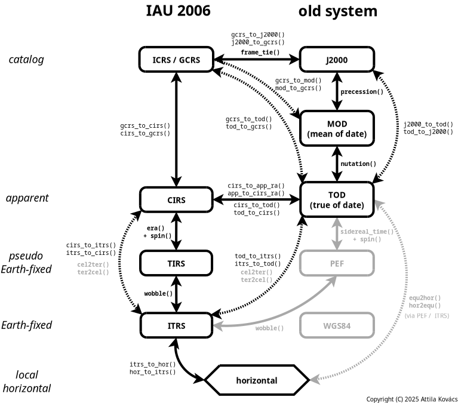
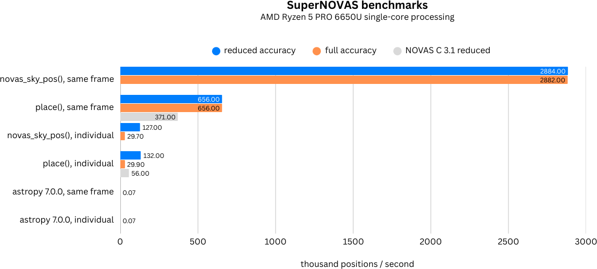

|
SuperNOVAS C API v1.8
High-precision C/C++ astrometry library
|
|
SuperNOVAS C API v1.8
High-precision C/C++ astrometry library
|

The NOVAS C astrometry library, made better.
SuperNOVAS is a C/C++ astronomy software library, providing high-precision astrometry such as one might need for running an observatory, a precise planetarium program, or for analyzing astronomical datasets. It started as a fork of the Naval Observatory Vector Astrometry Software (NOVAS) C version 3.1, but since then it has grown into its own, providing bug fixes, tons of new features, and a much improved API compared to the original NOVAS.
SuperNOVAS is easy to use and it is very fast, with 3–5 orders of magnitude faster position calculations than astropy 7.0.0 in a single thread (see the benchmarks), and its performance will scale further with the number of CPUs when calculations are performed in parallel threads.
SuperNOVAS is suitable for POSIX (e.g. Linux, BSD, MacOS, LynxOS), Windows, Android, as well as embedded and bare-metal platforms alike.
SuperNOVAS is available through the Sigmyne/SuperNOVAS repository on GitHub, without licensing restrictions. Its source code is compatible with the C99 and C++11 standards, and hence should be suitable for old and new platforms alike. And, despite it being a light-weight library, it fully supports the IAU 2000/2006 resolutions and the IERS 2010 conventions for microarcsecond-level position calculations.
This document has been updated for the v1.8 and later releases.
SuperNOVAS is a supercharged fork of the The Naval Observatory Vector Astrometry Software (NOVAS). (It is not related to the separate NOVA / libnova library.)
The primary goal of SuperNOVAS is to improve on the original NOVAS C library via:
At the same time, SuperNOVAS aims to be fully backward compatible with the intended functionality of the upstream NOVAS C library, such that it can be used as a build-time replacement for NOVAS in your application without having to change existing (functional) code you may have written for NOVAS C.
SuperNOVAS is really quite easy to use. Its new API is just as simple and intuitive as that of astropy (or so we strive for it to be), and it is similarly well documented also (see the documentation for the C99 and/or C++ APIs). You can typically achieve the same results with similar lines of code on C or C++ with SuperNOVAS as with astropy, notwithstanding a little more involved error handling (due to the lack of try / except style constructs in C/C++).
SuperNOVAS was created and is maintained by Attila Kovács. Outside contributions are very welcome. See how you can contribute to make SuperNOVAS even better.
SuperNOVAS fixes a number of outstanding issues with NOVAS C 3.1:
SuperNOVAS strives to maintain API compatibility with the upstream NOVAS C 3.1 library, but not binary (ABI) compatibility.
If you have code that was written for NOVAS C 3.1, it should work with SuperNOVAS as is, without modifications. Simply (re)build your application against SuperNOVAS, and you are good to go.
The lack of binary compatibility just means that you cannot drop-in replace the libraries (e.g. the static libnovas.a, or the shared libnovas.so), from NOVAS C 3.1 with those from SuperNOVAS. Instead, you will have to build (compile) your application referencing the SuperNOVAS headers and/or libraries from the start.
This is because some function signatures have changed, e.g. to use an enum argument instead of the nondescript short int option arguments used in NOVAS C 3.1, or because we added a return value to a function that was declared void in NOVAS C 3.1. We also changed the object structure to contain a long ID number instead of short to accommodate JPL NAIF codes, for which 16-bit storage is insufficient.
On Fedora / EPEL Linux and derivatives, you may install all packaged (build + runtime) dependencies as:
And on Debian and derivatives (e.g. Ubuntu, Mint, Alpine), you may do the same with:
On MacOS you may install the dependencies with Homebrew:
On BSD (e.g. FreeBSD, OpenBSD) you might install curl and calceph. And you will also need additional packages for building SuperNOVAS, such as and cmake and/or gmake, and pkgconf:
The SuperNOVAS distribution contains a GNU Makefile, which is suitable for compiling the library (as well as local documentation, and tests, etc.) on POSIX systems such as Linux, MacOS X, BSD, Cygwin or WSL – using GNU make.
Before compiling the library take a look a config.mk and edit it as necessary for your needs, or else define the necessary variables in the shell prior to invoking make. For example:
Additionally, you may set number of environment variables to futher customize the build, such as:
Now you are ready to build the library:
will compile the shared (e.g. lib/libsupernovas.so) libraries, and compile the API documentation (into doc/) using doxygen (if available). Alternatively, you can build select components of the above with the make targets shared, and local-dox respectively. And, if unsure, you can always call make help to see what build targets are available.
To build SuperNOVAS as static libraries, use make static.
After building the library you can install the above components to the desired locations on your system. For a system-wide install you may simply run:
Or, to install in some other locations, you may set a prefix and/or DESTDIR. For example, to install under /opt instead, you can:
Or, to stage the installation (to /usr) under a 'build root':
On BSD, you will need to use gmake instead of make (see section on dependencies above). You will also need pkgconf s.t. gcc may locate the dependencies (headers and libraries). In practice, it means setting CPPFLAGS and LDFLAGS to contain the appropriate include and library paths and libraries prior to calling gmake. E.g., to build against both libcurl and calceph:
Now you can build SuperNOVAS, for example as a shared library, with:
SuperNOVAS can be compiled as a static library for bare-metal embedded systems (e.g. ARM Cortex-M) or WebAssembly targets (as of v1.7, thanks to Kiran Shila). Set WITHOUT_LIBC=1 to build in freestanding mode, which disables all libc file I/O, heap allocation, and system clock dependencies:
For embedded ARM, this may look like:
where we cross-compile using the arm-none-eabi-gcc compiler with target-specific flags.
For WebAssembly with Emscripten, use emmake which substitutes the compiler and archiver automatically:
Note, that some SuperNOVAS functionality is lost when built without libc, such as setting current time or managing leap seconds and EOP automatically. Thus, you will have to specify these explicity instead, when needed.
As of v1.5, SuperNOVAS can be built using CMake (big thanks to Kiran Shila). CMake allows for greater portability than the regular GNU Makefile. Note, however, that the CMake configuration does not support all of the build options of the GNU Makefile, such as automatic CALCEPH and CSPICE integration on Linux, supporting legacy NOVAS C style builds, and code coverage tracking.
The basic build recipe for CMake is:
The SuperNOVAS CMake build supports the following options (in addition to the standard CMake options):
For example, to configure the build of SuperNOVAS with shared libraries and with CALCEPH integration for ephemeris support:
and then perform the build:
Or, on Windows (Microsoft Visual C) you will want:
If the config / CMAKE_BUILD_TYPE is not set, the build will only use the CFLAGS (if any) that were set in the environment. This is ideal for those who want to have full control of the compiler flags used in the build. Specifying Release or Debug will append a particular set of appropriate compiler options which are suited for the given build type. (If you want to use the MinGW compiler on Windows, you'll want to set -DCMAKE_C_COMPILER=gcc -G "MinGW Makefiles" options also.)
After a successful build, you can install the Runtime (libraries), and Development (headers, CMake config, and pkg-config) components, e.g. under /usr/local, as:
Or, you can use the --component option to install just the selected components. For example to install just the Runtime component:
As of version 1.5, SuperNOVAS is available through the vcpkg registry. The vcpkg port supports a wide range of platforms, including Linux, Windows, MacOS, and Android – for both arm64 and x64 architectures (and in case of Windows also x86). It is effectively the same as the CMake build (above), only with more simplicity, convenience, and dependency resolution.
The vcpkg port has optional add-on features, which may be installed along with the core library as needed. The following features are available:
You can install just the core C99 library of SuperNOVAS (without the C++ API and CALCEPH support) with vcpkg as:
Or, with a selected set of features, such as:
SuperNOVAS is packaged for Fedora / EPEL and Debian Linux distributions, and derivatives based on these (Ubuntu, Mint, RHEL, CentOS Stream, Alma Linux, Rocky Linux, Oracle Linux etc.).
On Fedora / EPEL based distributions you might install all components via:
And, on Debian-based platforms (such as Ubuntu or Mint) as:
In both cases the first package is the runtime library, the second is the C++11 runtime library, the third is the runtime for the solsys-calceph plugin, then documentation, and finally the files needed for application development.
As of version 1.5, there is also a Homebrew package through the maintainer's own Tap.
To install SuperNOVAS via Homebrew, in the recommended default configuration:
The above will build and install SuperNOVAS with the C++ API extension and the CALCEPH plugin support (including the calceph dependency, as needed). However, you may add further options to customize your build:
As of version 1.5, there is also a Nix package. This declarative and determinstic package manager can be used on every Linux distribution as well as MacOS. The default package includes the solsys-calceph plugin, but can be overriden by changing withCalceph.
Install to your profile with
Or include in your Nix build of other software with
 |
|---|
| Figure 1. SuperNOVAS Coordinate Systems and Conversions. Functions indicated in bold face are available in NOVAS C also. All other functions are available in SuperNOVAS only. SuperNOVAS also adds efficient matrix transformations between the equatorial systems. |
The IAU 2000 and 2006 resolutions have completely overhauled the system of astronomical coordinate transformations to enable higher precision astrometry. (Super)NOVAS supports coordinate calculations both in the old (pre IAU 2000) ways, and in the new IAU standard method. The table below provides an overview of how the old and new methods define some of the terms differently:
| Concept | Old standard | New IAU standard |
|---|---|---|
| Catalog coordinate system | MOD (e.g. FK4, FK5, HIP...) | International Celestial Reference System (ICRS) |
| Dynamical system | True of Date (TOD) | Celestial Intermediate Reference System (CIRS) |
| Dynamical R.A. origin | equinox of date | Celestial Intermediate Origin (CIO) |
| Precession, nutation, bias | no tidal terms | IAU 2000/2006 precession/nutation model |
| Celestial Pole offsets | dψ, dε (for TOD) | xp, yp (for ITRS) |
| Earth rotation measure | Greenwich Sidereal Time (GST) | Earth Rotation Angle (ERA) |
| Pseudo Earth-fixed system | PEF | Terrestrial Intermediate Reference System (TIRS) |
| Earth rotation origin | Greenwich Meridian | Terrestrial Intermediate Origin (TIO) |
| Earth-fixed System | WGS84 | International Terrestrial Reference System (ITRS) |
See the various enums and constants defined in novas.h, as well as the descriptions on the various NOVAS routines on how they are appropriate for the old and new methodologies respectively. Figure 1 also shows the relation of the various old and new coordinate systems and the (Super)NOVAS functions for converting position / velocity vectors among them.
SuperNOVAS can do a lot of things on its own. What it cannot do alone is provide precise positions for Solar-system bodies. For that, you need ephemeris data and a helping hand from an external tool to access them. Even if you don't particularly care to obtain precise planet positions per se, they are needed for a range of high-precision calculations (such as for positional calculations for Earth-based observers, and gravitational deflections in full-precision observing frames).
Therefore, it is strongly recommended that you download planetary ephemeris files from NASA / JPL (such as the DE440, or the smaller DE440s, or the long-term DE441), and install CALCEPH or the CSPICE Toolkit for accessing these. I recommend CALCEPH, because it is more widely available (also in packaged form), and it is also more modern, and actively maintained.
Provided you installed CALCEPH, your use of SuperNOVAS should always start with something like this (regardless of whether you will use the C99 or the C++ API afterwards):
Don't forget to link with -lsolsys-calceph and -lcalceph flags added you yor build. With that, you have now unlocked a lot of the high-precision capabilities of SuperNOVAS. Have fun with it!
For more details on using CALCEPH or integrating other ways for providing ephemeris data to SuperNOVAS look at the section below.
As of v1.6 SuperNOVAS comes in two flavors, the original C99 API, and a higher-level C++11 API. Depending on which one you intend to use, choose the appropriate link to an external document below for further information:
If you want to use SuperNOVAS to calculate positions for a range of Solar-system objects, and/or to do it with precision, you will have to interface it to a suitable provider of ephemeris data. The preferred ways to do that in SuperNOVAS enumerated below. (The legacy NOVAS C ways are not covered here, since they require specialized builds of SuperNOVAS, which are covered separately.)
NASA/JPL provides generic ephemerides for the major planets, satellites thereof, the 300 largest asteroids, the Lagrange points, and some Earth orbiting stations. For example, DE440 covers the major planets, and the Sun, Moon, and barycenters for times between 1550 AD and 2650 AD. Or, you can use the JPL HORIZONS system (via the command-line / telnet or API interfaces) to generate custom ephemerides (SPK/BSP) for just about all known solar systems bodies, down to the tiniest rocks.
The CALCEPH library provides easy-to-use access to JPL and INPOP ephemeris files from C/C++. As of version 1.2, we provide optional support for interfacing SuperNOVAS with the CALCEPH C library for handling Solar-system objects.
Prior to building SuperNOVAS simply set CALCEPH_SUPPORT to 1 in config.mk or in your environment (or for CMake configure with the -DENABLE_CALCEPH=ON). Depending on the build target (or type), it will build libsolsys-calceph.so[.1] (target shared or CMake option -DBUILD_SHARED_LIBS=ON1) or libsolsys-calceph.a (target static or default CMake build) libraries or solsys-calceph.o (target solsys, no CMake equivalent), which provide the novas_use_calceph() and novas_use_calceph_planets(), and novas_calceph_use_ids() functions.
Of course, you will need access to the CALCEPH C development files (C headers and unversioned libcalceph.so or .a library) for the build to succeed. Here is an example on how you'd use CALCEPH with SuperNOVAS in your application code:
First and foremost, you should use CALCEPH to provide planet positions via the DE440 or DE440s (smaller file size) or DE441 (long term) ephemeris data:
Even if you don't care for the planets, you'll still need the planetary ephemeris for a lot of the high-precision calculations, so don't skip on this step if you can help it.
Beyond just the planets, you might want to download and use further ephemeris data, such as for the many moons orbiting planets, the major asteroids, various minor bodies of interest (e.g. comets, NEOs), or man-made spacecrafts. You can activate an additional set (or sets) of ephemeris files separately from the planetary ephemeris above. For example:
All modern JPL (SPK) ephemeris files should work with the solsys-calceph plugin. When linking your application, add -lsolsys-calceph to your link flags (or else link with solsys-calceph.o), and link against the CALCEPH library also (-lcalceph). That's all there is to it.
When using CALCEPH, ephemeris objects are referenced by their ID numbers (object.number), unless it is set to -1, in which case name-based lookup will be used instead. ID numbers are assumed to be NAIF by default, but novas_calceph_use_ids() can select between NAIF or CALCEPH numbering systems, if necessary.
The NAIF CSPICE Toolkit is the canonical standard library for JPL ephemeris files from C/C++. As of version 1.2, we provide optional support for interfacing SuperNOVAS with CSPICE for handling Solar-system objects.
Prior to building SuperNOVAS simply set CSPICE_SUPPORT to 1 in config.mk or in your environment (or for CMake configure with -DENABLE_CSPICE=ON). Depending on the build target, it will build libsolsys-cspice.so[.1] (target shared or CMake option -DBUILD_SHARED_LIBS=ON) or libsolsys-cspice.a (target static or default CMake build) libraries or solsys-cspice.o (target solsys, no CMake equivalent), which provide the novas_use_cspice(), novas_use_cspice_planets(), and novas_use_cspice_ephem() functions to enable CSPICE for providing data for all Solar-system sources, or for major planets only, or for other bodies only, respectively. You can also manage the active kernels with the cspice_add_kernel() and cspice_remove_kernel() functions.
Of course, you will need access to the CSPICE development files (C headers, installed under a cspice/ directory of a header search location, and the unversioned libcspice.so or .a library) for the build to succeed. You may want to check out the Sigmyne/cspice-sharedlib GitHub repository to help you build CSPICE with shared libraries and dynamically linked tools.
Here is an example on how you might use CSPICE with SuperNOVAS in your application code:
All JPL ephemeris data will work with the solsys-cspice plugin. When linking your application, add -lsolsys-cspice to your link flags (or else link with solsys-cspice.o), and of course the CSPICE library also. That's all there is to it.
When using CSPICE, ephemeris objects are referenced by their NAIF ID numbers (object.number), unless that number is set to -1, in which case name-based lookup will be used instead.
Possibly the most universal way to integrate ephemeris data with SuperNOVAS is to write your own novas_ephem_provider function.
which takes an object ID number (such as a NAIF), an object name, and a split TDB date (for precision) as it inputs, and returns the type of origin with corresponding ICRS position and velocity vectors in the supplied pointer locations. The function can use either the ID number or the name to identify the object or file (whatever is the most appropriate for the implementation and for the supplied parameters). The positions and velocities may be returned either relative to the SSB or relative to the heliocenter, and accordingly, your function should set the value pointed at by origin to NOVAS_BARYCENTER or NOVAS_HELIOCENTER accordingly. Positions and velocities are rectangular ICRS x,y,z vectors in units of AU and AU/day respectively.
This way you can easily integrate current ephemeris data, e.g. for the Minor Planet Center (MPC), or whatever other ephemeris service you prefer.
Once you have your adapter function, you can set it as your ephemeris service via set_ephem_provider():
By default, your custom my_ephem_reader function will be used for NOVAS_EPHEM_OBJECT type objects only (i.e. anything other than the major planets, the Sun, Moon, Solar-system Barycenter...). But, you can use the same function for the major planets (NOVAS_PLANET type objects) also via:
The above simply instructs SuperNOVAS to use the same ephemeris provider function for planets as what was set for NOVAS_EPHEM_OBJECT type objects, provided you compiled SuperNOVAS with BUILTIN_SOLSYS_EPHEM = 1 (in config.mk), or else you link your code against solsys-ephem.c explicitly. Easy-peasy.
Many of the (Super)NOVAS functions take an accuracy argument, which determines to what level of precision quantities are calculated. The argument can have one of two values, which correspond to typical precisions around:
| enum novas_accuracy value | Typical precision |
|---|---|
| NOVAS_REDUCED_ACCURACY | ~ 1 milli-arcsecond (mas) |
| NOVAS_FULL_ACCURACY | ~ 1 micro-arcsecond (μas) |
Note, that some functions will not support full accuracy calculations, unless you have provided a high-precision ephemeris provider for the major planets (and any Solar-system bodies of interest), which does not come with SuperNOVAS out of the box. In the absence of a suitable high-precision ephemeris provider, some functions might return an error if called with NOVAS_FULL_ACCURACY.
The SuperNOVAS library is in principle capable of calculating positions to microarcsecond, and velocities to mm/s, precision for all types of celestial sources. However, there are certain prerequisites and practical considerations before that level of accuracy is reached. (Click on the wedge next to each heading below to expand the details.)
High precision calculations will generally require that you use SuperNOVAS with the new IAU standard quantities and methods. The old ways were simply not suited for precision much below the milliarcsecond level. In particular, Earth orientation parameters (EOP) should be applied only for converting between TIRS and ITRS systems, and defined either with novas_make_frame() or else with wobble(). The old ways of incorporating (global) offsets in TOD coordinates via cel_pole() should be avoided.
Calculations much below the milliarcsecond level will require accounting for gravitational bending around massive Solar-system bodies, and hence will require you to provide a high-precision ephemeris provider for the major planets. Without it, there is no guarantee of achieving precision below the milli-arcsecond level in general, especially when observing near the Sun or massive planets (e.g. observing Jupiter's or Saturn's moons, near conjunction with their host planet). Therefore, some functions will return with an error, if used with NOVAS_FULL_ACCURACY in the absence of a suitable high-precision planetary ephemeris provider.
Precise calculations for Solar-system sources requires precise ephemeris data for both the target object as well as for Earth, and the Sun. For the highest precision calculations you also need positions for all major planets to calculate gravitational deflection precisely. By default, SuperNOVAS can only provide approximate positions for the Earth and Sun (see earth_sun_calc()) at the tens of arcsecond level. You will need to provide a way to interface SuperNOVAS with a suitable ephemeris source (such as CALCEPH, or the CSPICE toolkit from JPL) to obtain precise positions for Solar-system bodies. See the section further above for more information how you can do that.
Calculating precise positions for any Earth-based observations requires precise knowledge of Earth orientation parameters (EOP) at the time of observation. Earth's pole is subject to predictable precession and nutation, but also small irregular and diurnal variations in the orientation of the rotational axis and the rotation period (a.k.a. polar wobble). You can apply the EOP values in novas_set_time() (for UT1-UTC), and novas_make_frame() (xp and yp) to improve the astrometric precision of Earth based coordinate calculations. Without the EOP values, positions for Earth-based calculations will be accurate at the tenths of arcsecond level only.
The IERS Bulletins provide up-to-date measurements, historical data, and near-term projections for the polar offsets, the UT1-UTC time difference, and leap-seconds (UTC-TAI). For sub-milliarcsecond accuracy the values published by IERS should be interpolated before passing to the likes of novas_set_time() or novas_make_frame(). At the micro-arcsecond (μas) level, you will need to ensure also that the EOP values are provided for the same ITRF realization as the observer's location, e.g. via novas_itrf_transform_eop().
As of version 1.7, SuperNOVAS provides the option to fetch EOP values from IERS automatically, as needed. However, beware that the IERS servers may experience intermittent outages, availability and file formats may change. Therefore, for critical applications it is still recommended that you supply your EOP values explicitly, if possible.
Ground based observations are subject to atmospheric refraction. SuperNOVAS offers the option to include refraction corrections with a set of atmospheric models, or using models you provide. Estimating refraction accurately requires local weather parameters (pressure, temperature, and humidity), which may be be specified within the on_surface data structure alongside the observer location. A standard radio refraction model is included as of version 1.1, as well as our implementation of the wavelength-dependent IAU refraction model (novas_wave_refraction() since version 1.4) based on the SOFA iauRefco() function. If none of the built-in options satisfies your needs, you may also implement your own refraction correction to use.
When one does not need positions at the microarcsecond level, some shortcuts can be made to the recipe above:
You can enable or disable debugging output to stderr with novas_debug(enum novas_debug_mode), where the argument is one of the defined constants from novas.h:
| novas_debug_mode value | Description |
|---|---|
| NOVAS_DEBUG_OFF | No debugging output (default) |
| NOVAS_DEBUG_ON | Prints error messages and traces to stderr |
| NOVAS_DEBUG_EXTRA | Same as above but with stricter error checking |
The main difference between NOVAS_DEBUG_ON and NOVAS_DEBUG_EXTRA is that the latter will treat minor issues as errors also, while the former may ignore them. For example, place() will return normally by default if it cannot calculate gravitational bending around massive planets in full accuracy mode. It is unlikely that this omission would significantly alter the result in most cases, except for some very specific ones when observing in a direction close to a major planet. Thus, with NOVAS_DEBUG_ON, place() go about as usual even if the Jupiter's position is not known. However, NOVAS_DEBUG_EXTRA will not give it a free pass, and will make place() return an error (and print the trace) if it cannot properly account for gravitational bending around the major planets as it is expected to.
When debug mode is enabled, any error condition (such as NULL pointer arguments, or invalid input values etc.) will be reported to the standard error, complete with call tracing within the SuperNOVAS library, s.t. users can have a better idea of what exactly did not go to plan (and where). The debug messages can be disabled by passing NOVAS_DEBUG_OFF (0) as the argument to the same call. Here is an example error trace when your application calls grav_def() with NOVAS_FULL_ACCURACY while solsys3 provides Earth and Sun positions only and when debug mode is NOVAS_DEBUG_EXTRA (otherwise we'll ignore that we skipped the almost always negligible deflection due to planets):
You can use the built-in error tracing to identify where things go awry in your code. You can turn on error tracing for your entire code, or for a relevant section, in which a SuperNOVAS function returns an error (such as -1 or NaN), e.g.:
To get an idea of the speed of SuperNOVAS, you can use make benchmark on your machine. Figure 2 below summarizes the single-threaded results obtained with v1.5.0 on an AMD Ryzen 5 PRO 6650U laptop. While this is clearly not the state of the art for today's server class machines, it nevertheless gives you a ballpark idea for how a typical, not so new, run-of-the-mill PC might perform.
 |
|---|
| Figure 2. SuperNOVAS apparent position calculation benchmarks, including proper motion, the IAU 2000 precession-nutation model, polar wobble, aberration, and gravitational deflection corrections, and precise spectroscopic redhift calculations. |
The tests calculate apparent positions (in CIRS) for a set of sidereal sources with random parameters, using either the SuperNOVAS novas_sky_pos() or the legacy NOVAS C place(), both in full accuracy and reduced accuracy modes. The two methods are equivalent, and both include calculating a precise geometric position, as well as aberration and gravitational deflection corrections from the observer's point of view.
| Description | accuracy | positions / sec |
|---|---|---|
| novas_sky_pos(), same frame | reduced | 3130414 |
| full | 3149028 | |
| place(), same time, same observer | reduced | 831101 |
| full | 831015 | |
| novas_sky_pos(), individual | reduced | 168212 |
| full | 25943 | |
| place(), individual | reduced | 167475 |
| full | 25537 |
For reference, we also provide the reduced accuracy benchmarks from NOVAS C 3.1.
| Description | accuracy | positions / sec |
|---|---|---|
| NOVAS C 3.1 place(), same frame | reduced | 371164 |
| NOVAS C 3.1 place(), individual | reduced | 55484 |
For comparison, a very similar benchmark with astropy (v7.0.0 on Python v3.13.1) on the same machine, provides ~70 positions / second both for a fixed frame and for individual frames. As such, SuperNOVAS is a whopping ~40000 times faster than astropy for calculations in the same observing frame, and 400–2000 times faster than astropy for individual frames. (The astropy benchmarking code is also provided under the benchmark/ folder in the SuperNOVAS GitHub repository).
| Description | positions / sec |
|---|---|
| astropy 7.0.0 (python 3.13.1), same frame | 71 |
| astropy 7.0.0 (python 3.13.1), individual | 70 |
As one may observe, the SuperNOVAS novas_sky_pos() significantly outperforms the legacy place() function, when repeatedly calculating positions for sources for the same instant of time and same observer location, providing 3–4 times faster performance than place() with the same observer and time. The same performance is maintained even when cycling through different frames, a usage scenario in which the performance advantage over place() may be up to 2 orders of magnitude. When observing frames are reused, the performance is essentially independent of the accuracy. By contrast, calculations for individual observing times or observer locations are generally around twice a fast if reduced accuracy is sufficient.
The above benchmarks are all for single-threaded performance. Since SuperNOVAS is generally thread-safe, you can expect that performance shall scale with the number of concurrent CPUs used. So, on a 16-core PC, with similar single core performance, you could calculate up to 32 million precise positions per second, if you wanted to. To put that into perspective, you could calculate precise apparent positions for the entire Gaia dataset (1.7 billion stars) in under one minute.
Below is a non-exhaustive overview new features added by SuperNOVAS on top of the existing NOVAS C API. See CHANGELOG.md for more details.
Many SuperNOVAS changes are focused on improving the usability and promote best coding practices so that both the library and your application will be safer, and less prone to nagging errors. Below is a detailed listing of the principal ways SuperNOVAS has improved on the original NOVAS C library in these respects.
A predictable release schedule and process can help manage expectations and reduce stress on adopters and developers alike.
SuperNOVAS will try to follow a quarterly release schedule. You may expect upcoming releases to be published around February 1, May 1, August 1, and/or November 1 each year, on an as-needed basis. That means that if there are outstanding bugs, or new pull requests (PRs), you may expect a release that addresses these in the upcoming quarter. The dates are placeholders only, with no guarantee that a new release will actually be available every quarter. If nothing of note comes up, a potential release date may pass without a release being published.
New features are generally reserved for the feature releases (e.g. 1.x.0 version bumps), although they may also be rolled out in bug-fix releases as long as they do not affect the existing API – in line with the desire to keep bug-fix releases fully backwards compatible with their parent versions.
In the weeks and month(s) preceding releases one or more release candidates (e.g. 1.0.1-rc3) will be published temporarily on GitHub, under Releases, so that changes can be tested by adopters before the releases are finalized. Please use due diligence to test such release candidates with your code when they become available to avoid unexpected surprises when the finalized release is published. Release candidates are typically available for one week only before they are superseded either by another, or by the finalized release.
Copyright (C) 2026 Attila Kovács